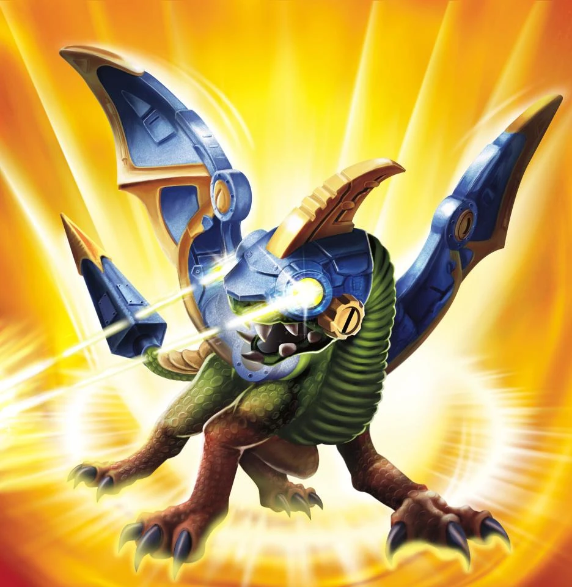
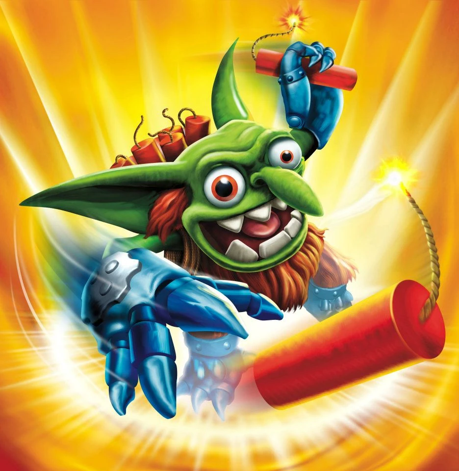
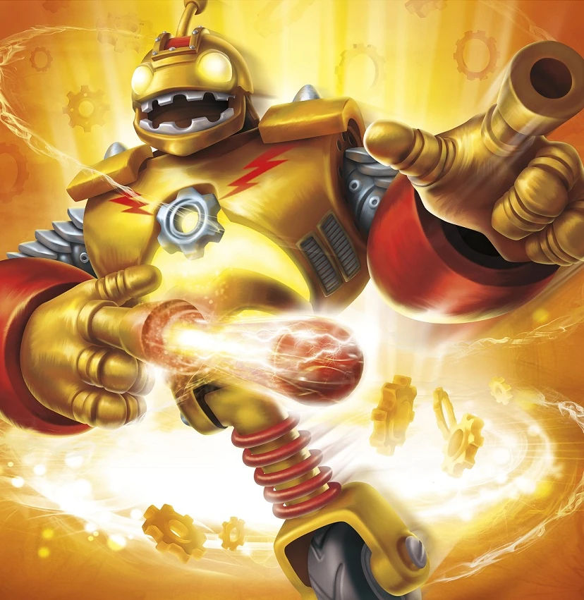
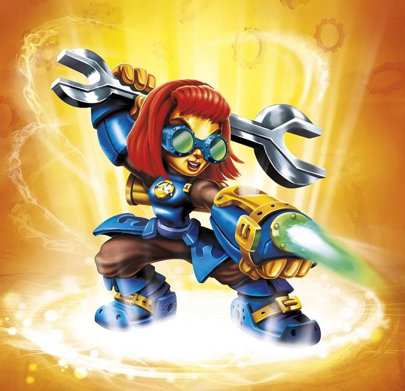
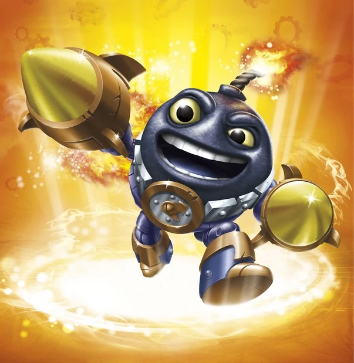
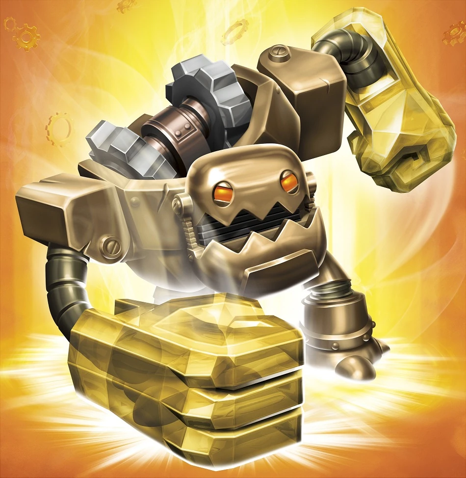
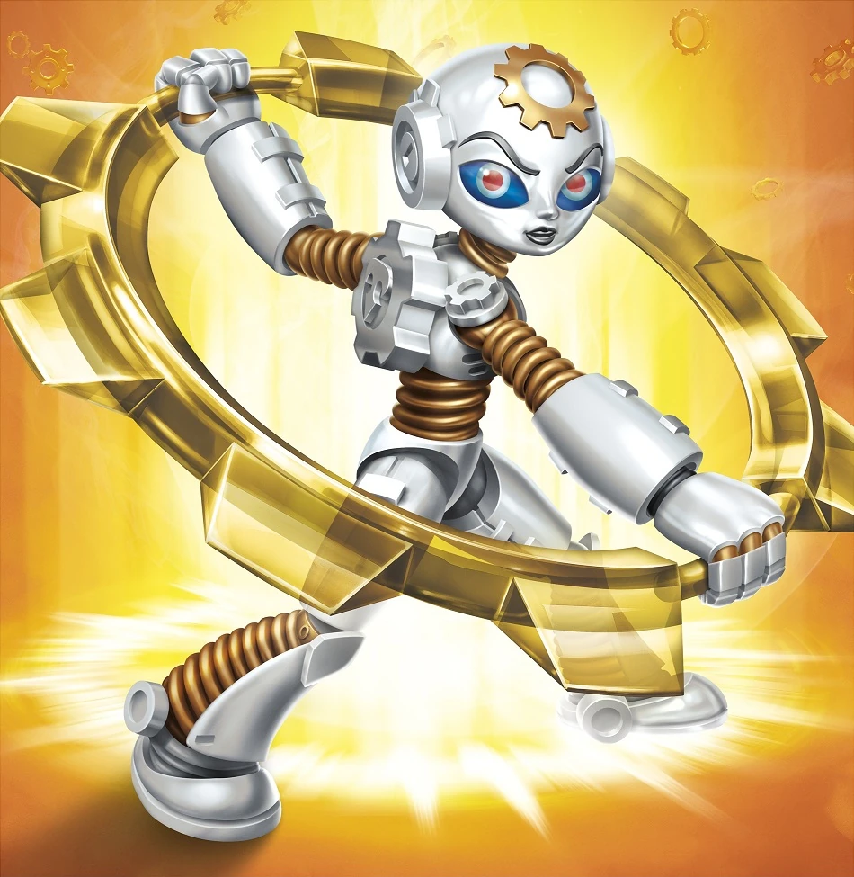
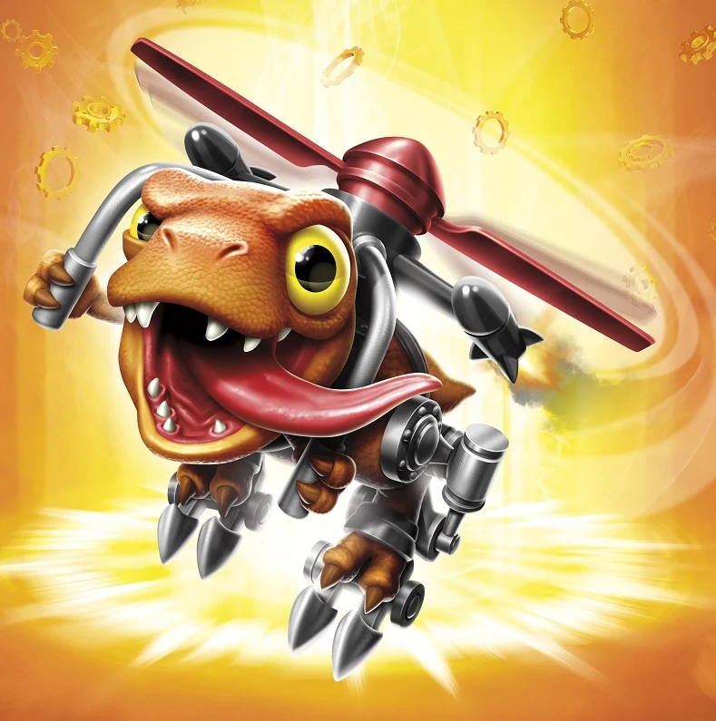
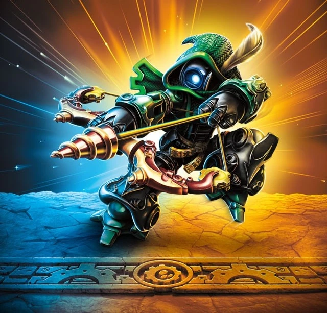

Drobot
Dragons are smart, but none so much as Drobot. He was born in the highest reaches of Skylands, where dragons spent all their time competing in aerial battles. But Drobot was more interested in taking things apart to see how they worked. While exploring one day, he came upon some mysterious technology, which he used to assemble a robotic suit. Features include laser beams that shoot from his eyes, flight enhancement technology, a vocal synthesizer that gives him a deep booming voice, and the ability to shoot spinning gears. With such power – more than most other dragons – Drobot joined the Skylanders to help protect the residents of Skylands.
Drill Sergeant
Like many Arkeyan artifacts, Drill Sergeant was buried for centuries – a long forgotten remnant of an ancient powerful civilization. It was only a chance collision with a burrowing Terrafin that led to his systems firing up again. By Arkeyan custom, Drill Sergeant was then obligated to become Terrafin’s servant. This didn’t sit well with the dirt shark, so his first order as master was for Drill Sergeant to not serve him at all… a command he continues to follow zealously to this day.

Boomer
As a young troll, Boomer loved to blow things up -- particularly sheep. Later, he was drafted into the troll army, where they gave him LOTS of things to blow up. However, Boomer soon realized the sole mission of the army was war and conquest. Even though he was a troll, these things didn't interest him. So he left the trolls after saving a town from being destroyed by them. Not long after, he was invited to be a Skylander -- the only troll ever to win such an honor. Now he uses his explosive skills to fight evil... much to the relief of sheep everywhere.
Trigger Happy
Trigger Happy is more than his name -- it's his solution to every problem. Nobody knows from where he came. He just showed up one day in a small village, saving it from a group of terrorizing bandits by blasting gold coins everywhere with his custom-crafted shooters. Similar tales were soon heard from other villages, and his legend quickly grew. Now everyone in all of Skylands knows of the crazy goldslinger that will take down any bad guy... usually without bothering to aim.

Bouncer
Long ago, Bouncer was an All-Star Roboto-Ball player. But when the Arkeyan Empire destroyed his home town and discontinued the games, he was converted into a security-bot and stationed in the mines. It was there that Bouncer encountered dozens of Mabu prisoners who remembered him fondly from his playing days. He quickly became a bit of a celebrity around the mines, and it wasn't long before this new adulation convinced him that he could be just as much of a hero in life as he was on the field. Thus, he decided to join the Skylanders and take a stand against the evil, Arkeyan overlords.

Sprocket
Sprocket was raised with all the privileges of a rich, proper Goldling. But she cared little for fancy things. Instead, she spent most of her time growing up in her uncle's workshop, learning how to build and fix his many mechanical inventions. But everything changed on the day her uncle mysteriously vanished. When she eventually discovered that Kaos had been behind his disappearance, she constructed a battle suit and went after him, leaving the luxury and comfort of her family's wealth behind. From that moment on, Sprocket was dedicated to fighting the forces of evil, whilst never losing hope that she would reunite with her beloved uncle.
Spy Rise
From the moment he could crawl, Spy Rise wanted nothing more than to join his father in the family business as a private investigator. But after being hired by a shadowy figure to gather information on the Cloudbreak Islands, his father vanished, leaving Spy Rise alone to search for answers. He scoured the land for clues, using his immense skill in reconnaissance to track down his missing father, but all roads came up empty. Then one day, he received a tip from none other than Master Eon, which led him to a hidden lair near Mt. Cloudbreak, where he not only found his long lost father, but also uncovered an evil plot to take control of the magical volcano during the next eruption ceremony. With his father safe, Spy Rise decided to pursue a new career -- as a member of the Skylanders.
Magna Charge
Magna Charge came from the great race of Ultron robots, but was mysteriously created with a giant magnet head. This proved problematic, as his peers were all made of metal and were constantly being pulled towards him. As a result, Magna Charge was exiled to a faraway island, where he eventually learned to control his magnetic powers. After years of training, he returned to his home to demonstrate his abilities, but found everything completely destroyed. In searching for answers, Magna Charge caught the attention of Master Eon, who realized the unique Ultron soldier was a perfect candidate for the Skylanders.
Wind-Up
Built in the enchanted workshop of a toymaker obsessed with time, Wind-Up was created to help keep his massive collection of complicated clocks working perfectly. But when the toymaker popped out of existence in a freak accident caused by putting hot cocoa in a cross-wired Arkeyan oven, Wind-Up found himself surrounded by an invading Cyclops platoon - with an eye towards claiming the toymaker's secrets for themselves. Using split-second timing, clockwork strategy, and his totally wound up energy, Wind-Up bravely sprang into action and handily defeated the Cyclops. He later joined the Skylanders to help swing the pendulum the other way in their fight against anything that threatens Skylands.

Countdown
Countdown was discovered by a group of Yetis who were snowboarding one particularly chilly morning when they came across a big bomb encased in ice. After bringing it back to their cabin, they were shocked when it actually came to life. No one, not even Countdown himself, has any memory of where he came from or how he ended up frozen in the mountains. Since becoming a Skylander, Master Eon has been graciously trying to help piece together fragments of his past. But this has proven difficult, as Countdown loses some of his memory every time he explodes – which happens a lot. In the meantime, Countdown has enjoyed working with Eon and fighting alongside the Skylanders to defend their world against evil – even though he occasionally forgets what he is doing.

Jawbreaker
Jawbreaker hailed from a race of robots that operated and maintained a vast underground complex of enormous machines that powered the legendary Sky Train, which traveled between a thousand different islands daily. Like many of his fellow robots, Jawbreaker led an ordered existence – full of rules and regulations – which he followed happily. However, one day a huge army of Gear Trolls invaded the subterranean complex. Known for being major train enthusiasts, they were set on taking over the Sky Train for their own evil use. Jawbreaker quickly jumped into action and used his massive fists to beat the trolls into retreat. His quick action and ability to think for himself made him an individual. For this he was made part of the Trap Team, where he now uses his Traptanium powered fists to deliver mighty blows to evil!

Gearshift
Gearshift was created on the Tech island of Metallana by King Mercurus, who considered the young robot to be his own daughter. But rather than performing royal duties, Gearshift preferred to spend her time in the oily depths of the kingdom among its workers, secretly tending to the huge subterranean machines. When her father discovered this, he was furious - but then a squadron of Undead Stormriders suddenly attacked. Learning that these marauders wanted to capture her father, Gearshift used her knowledge of the labyrinth below to hide him. Seizing the emblem of her people - The Great Gear - she used it to fight the Stormriders, inspiring the workers to rise up. Together, they drove the Stormriders out of Metallana and saved the kingdom. For this, Gearshift was made part of the Trap Team, using her new awesome Traptanium-forged gear to help defend Skylands.
Tread Head
As an orphan from the Dizzying Dunes, Tread Head had always dreamed of racing. And after a summer of scavenging for parts, he finally managed to build a bike that would allow him to enter the local racing circuit. The other competitors laughed at the crudeness of his work, but Tread Head had built it for performance, not for style. So when the race began, he jumped out to a commanding lead. But as he entered a canyon, he suddenly found himself at a roadblock – of Goblin troops! Knowing the other racers were in danger, he pulled off the road and kicked up so much dust that the Goblins had no choice but to flee, allowing the other racers to pass safely. Tread Head may have lost the race that day, but he earned the respect of Master Eon, who would see to it that Tread Head would tread on evil wherever he goes!

Chopper
Growing up, Chopper was much smaller than the rest of his dinosaur kin. But this didn’t bother him because he had big ideas. Ahead of the annual hunting competition to honor the village idol, Roarke Tunga, Chopper spent weeks building himself a super Gyro-Dino-Exo-Suit. When the competition began, he took the air – firing his missiles and chomping everything in his path. With Chopper on the verge of victory, the competition came to a sudden halt when the nearby volcano erupted, flooding the village with lava. Seeing the residents of his village trapped, Chopper quickly flew into action. One at a time, he airlifted everyone to safety. And was even able to save the village idol. For heroically using his head, Chopper was made a Skylander!
High Volt
High Volt was once the commander of a special security force that was in charge of patrolling the border between the known regions of Skylands and the mysterious uncharted region known as the Outlands. From atop the Shockspire Tower, their security headquarters, High Volt vigilantly monitored any strange activity beyond the border, knowing that Kaos and his minions were always up to no good. Over the years, he had defended Skylands against countless Greeble attacks, Troll uprisings, and even a few evil food chains that were attempting to expand. But on a recent patrol mission into the Outlands, High Volt discovered a heavily guarded construction site, where Kaos' minions appeared to be building a colossal Doom Station of Ultimate Destruction! Realizing at once that all of Skylands was in danger, he raced to the Skylanders Academy to inform Master Eon and joined the Skylanders in their fight to stop it!
Double Dare Trigger Happy
Double Dare Trigger Happy is the Supercharger counterpart of Trigger Happy in Skylanders Superchargers. His signature vehicle is the Gold Rusher.
Chain Reaction
No matter what he was doing, Chain Reaction always prided himself at being the best at it. Despite his impressive skills, though, the two chainsaw swords he regularly wielded tended to scare most people away. As a result, Chain Reaction was often lonely. But that all changed the day he witnessed a group of young dwarves getting picked on by an evil gang of ninja rats, the dwarves looked at Chain Reaction as their hero, and followed him everywhere he went. While Chain Reaction appreciated the company, he knew that he could not protect them forever, so he decided to teach them all he knew so that they could one day protect themselves. Sometime later, Master Eon heard rumors about dwarves from a small village who had successfully defended themselves against a large army of ninja rats thanks to the teachings of a great master. He knew at once that he needed to find Chain Reaction and make him a Sensei.

Ro-Bow
There is no record of the person who originally built Ro-Bow. By the time his basic systems were fully online, his creator was nowhere to be found. Ro-Bow searched far and wide, but since his programming was incomplete, he was unable to communicate with anyone. Eventually he stumbled upon the remains of an old lair that had been built by Kaos, and discovered a strange device inside the Matter Refactoring Room. Ro-Bow was able to access the device and download a staggering amount of information from it, which gave him the ability to speak, albeit in a slightly strange language, as well as shoot driller arrows with pinpoint accuracy. He also acquired a lot of details about Kaos himself. Even though Ro-Bow's past was a mystery, his future became quite clear - his new prime directive was to seek out Master Eon and help fight evil. With this incredible archery knowledge and skills, there could be no better trainer for the Bowslinger Class, so Eon made him a Sensei on the spot.
Dr. Krankcase
History
No one is really quite sure exactly what Dr. Krankcase is a doctor of... but his technical engineering achievements are legendary. The secret to his success lies in his modified concoction of glowing green goo, which causes wooden objects to come to life and turn evil. His unique skillset makes him a valuable asset to the Doom Raiders, who have plenty of nefarious uses for evil wooden creatures called Evilikins. It is also commonly known that Dr. Krankcase served as an evil inspiration to Kaos once upon a time, who had figured out how to make his own wooden creatures, the Wilikins, come to life after reading about the doctor's exploits in the Minion Monthly Catalog. Kaos also respected Dr. K's interest in world domination and doom engineering, not to mention his well-documented love of pickles.
Skylanders Trap Team
Dr. Krankcase, and the other Doom Raiders, were freed from Cloudcracker Prison by Kaos who attempted to assume leadership over the villainous group. However the villains were more willing to follow the orders of their original leader, the Golden Queen. Dr. Krankcase created an Ultimate Weapon to harness the power of Traptanium for the Doom Raiders to use for their evil ends. When the Skylanders shut off the supply of goo needed to power the weapon, Dr. Krankcase quickly found a solution to the problem to avoid the Golden Queen's wrath. The mad scientist explained that by burying a slice of cheese, it can grow incredibly stinky 10,000 years in the future where the Doom Raiders can retrieve it and bring it back to the present.
Since a Portal Master was needed to travel through time, Dr. Krankcase and Wolfgang were assigned to retrieve Kaos. The Skylanders confronted Dr. Krankcase in his workshop and he engaged them in battle, capturing Kaos in the process. During the fight, Wolfgang arrived, and the mad scientist was left on his own when the werewolf only came to collect Kaos and take him to Time Town. Dr. Krankcase was eventually defeated despite the best of his abilities, and was captured shortly afterwards.
After his capture, the Skylanders took him to Time Town (which is where Wolfgang was holding Kaos hostage) for his Villain Quest called "Diorama Drama", provided by a Wilikin named Leyland. He wanted the mad doctor to see a diorama to see if he found it fun. However, Krankcase instead melted it with goo gun, much to Leyland's horror, though he hinted that their might be a surprise behind it. Krankcase was then awarded with the Wilikin's thanks, a new outfit, and the Bobby hat.
Skylanders Imaginators
Before the events of Skylanders Imaginators, Dr. Krankcase was responsible for the creation of Boom Bloom.
After being captured by the Trap Masters, Eon gave some of the villains a choice – either go back to a newly reformed Cloudcracker Prison or become a Skylander Sensei, teaching a new generation of Imaginators his formidable battle skills as well as how to stay clear of a life of crime. Krankcase, and few of the other Doom Raiders, accepted this deal but first had to prove themselves by helping to re-arrange all the books in the Academy’s library, a task which took almost two years, testing every ounce of will he had. And his knowledge of the alphabet. Now he uses that newfound knowledge to train Imaginators on the A, B, Cs of shooting, as the master of the Quickshot Class.
Dr. Neo Cortex
A wormhole has opened in Skylands and the great Aku Aku appears! He comes to announce the once-in-two-decades Synchronization Celebration -- it is the time when all the worlds align perfectly. All the inhabitants of Wumpa Island are having a huge party in the Wumpa Islands and want to invite the Skylanders. But Dr. Neo Cortex has created a sinister machine to harness this incredible energy for his own evil purposes, only to watch it go completely haywire. Now Dr. Neo Cortex must partner with Crash Bandicoot to stop the machine before Wumpa Islands are completely shaken apart!